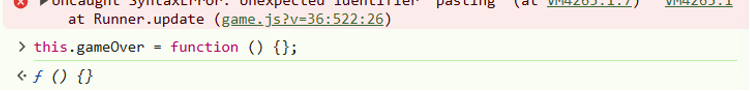
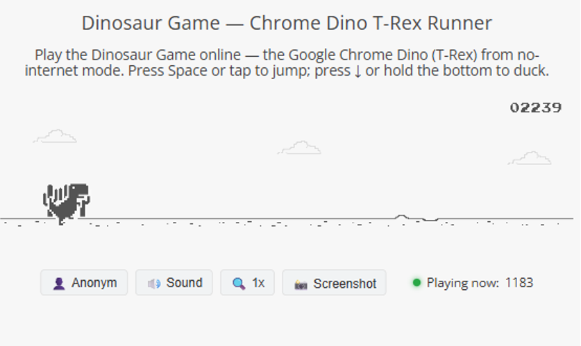
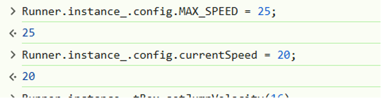
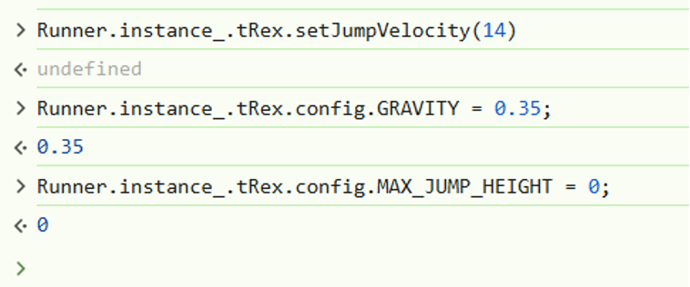

1 Chặn game over
Ghi đè hàm gameOver bằng hàm rỗng, nên khi va chạm game vẫn chạy tiếp.
Runner.instance_.gameOver = function () {};


2 Đổi tốc độ
Gọi setSpeed() để đặt tốc độ chạy mới cho game.
Runner.instance_.setSpeed(30);

3 Đổi độ nhảy
Gọi setJumpVelocity() của đối tượng khủng long để tăng lực nhảy.
Runner.instance_.tRex.setJumpVelocity(20);
